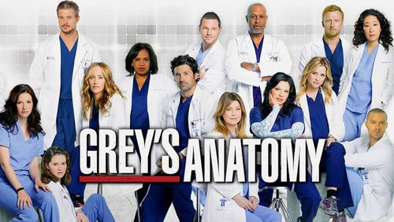
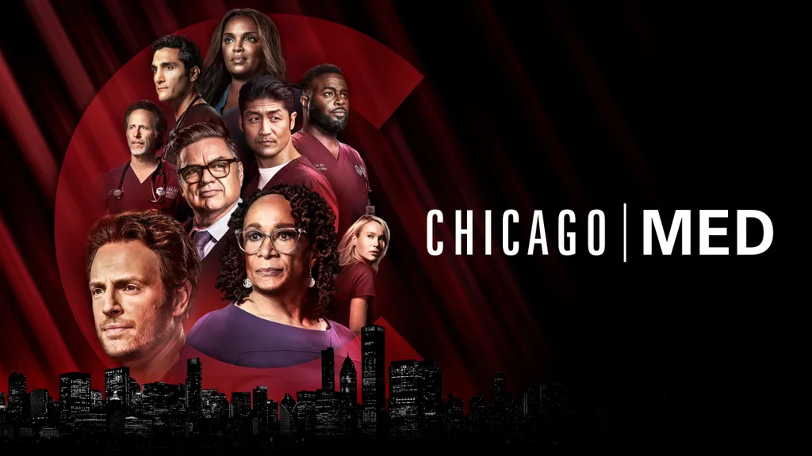

Creado por el mismo escritor de Doctor House, la narrativa de David Shore
cuenta la historia de un joven cirujano con autismo y síndrome de Savant, que
trabaja en un hospital y enfrenta retos tanto en su vida profesional como personal.
La serie se centra en los dilemas médicos y éticos, similar a House, y ofrece un
enfoque sobre cómo una perspectiva única puede ayudar a resolver casos complejos.

Es una serie de drama médico que sigue las vidas personales y profesionales
de un grupo de médicos en el ficticio Seattle Grace Hospital. Aunque el
estilo es más romántico y dramático, la serie también presenta casos médicos
interesantes y dilemas éticos en el ámbito hospitalario.

Esta serie explora la vida de un residente médico en un hospital que debe
enfrentarse a problemas internos y dilemas éticos, tanto médicos como personales.
Tiene un tono más serio y aborda temas como corrupción y negligencia en el sistema de salud.

Esta serie sigue la vida de médicos, enfermeras y personal de urgencias en un hospital
de Chicago. Combina drama personal con casos médicos complejos, lo que la hace interesante
para quienes buscan una perspectiva profunda sobre el ambiente médico.